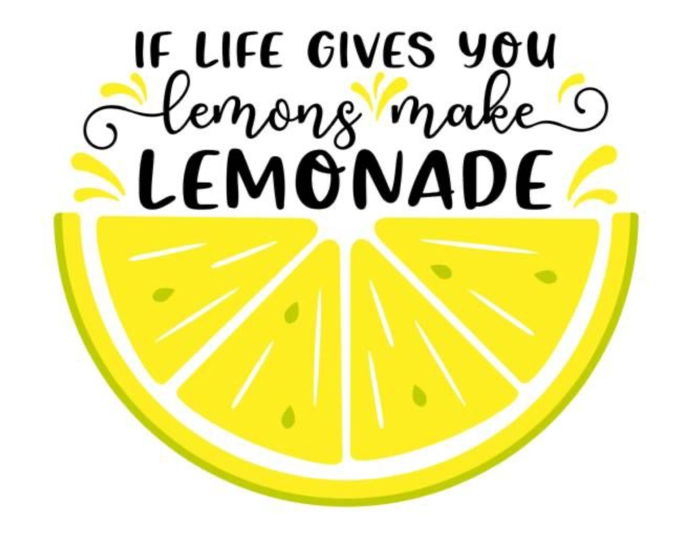
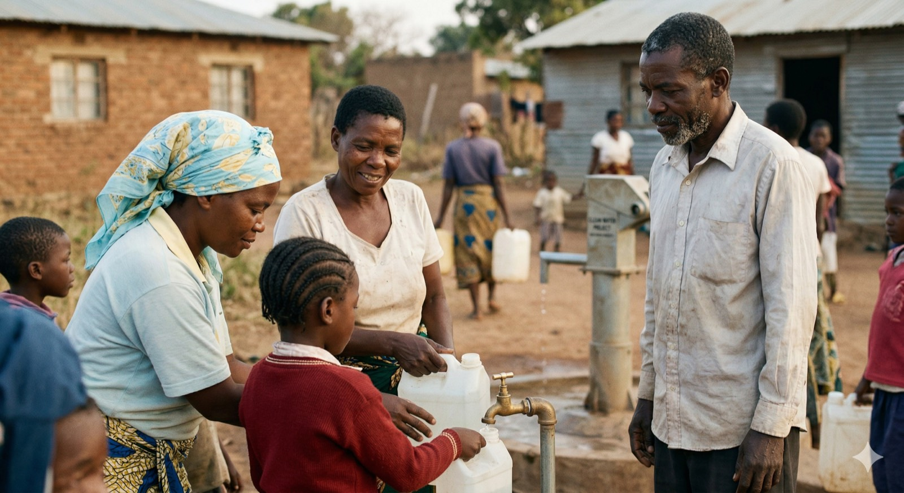

Human memorials
A way to honour a parent, sibling, partner, or friend with something that keeps moving through the years.
Stories & Meaning
This page gives the brand more room to explain the emotional logic behind EverLemon: human memorials, pet memorials, thoughtful gifts, and the strange, tender space between grief and future joy.

Who it serves
A way to honour a parent, sibling, partner, or friend with something that keeps moving through the years.

For families who know a beloved animal shaped the household and deserves more than a symbolic object.

For people who want to offer comfort that matures over time instead of ending at the funeral flowers.
The emotional thesis
“Grief evolves. The memorial should be allowed to evolve too.”
EverLemon is trying to avoid two traps at once: empty positivity and static sadness. The site needs enough space to show that balance, especially for families who are careful about tone.


Language and atmosphere
A fuller site helps hold the emotional middle ground. It gives the copy room to be warm, calm, and grounded rather than trying to explain everything in a few crowded sections.
A better story structure
Splitting content across pages keeps each page focused. The homepage can attract and orient; this page can deepen and reassure.
Next page